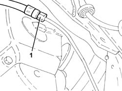
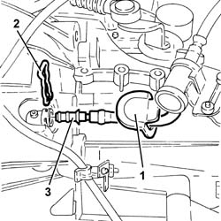
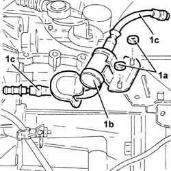
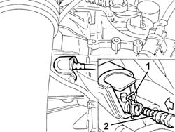
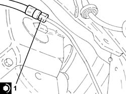
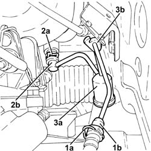

1820B58 clutch hydraulic circuit vibration damper - r+r
- Path
- Procedures > 18 CLUTCH > 1820 CLUTCH RELEASE CONTROLS > 1820B HYDRAULIC CLUTCH SYSTEM > 1820B58 clutch hydraulic circuit vibration damper - r+r
- Kind
- repair procedure (removal / refitting; the operation number is the code)
- Applies to
- engines: 1.6 TS, 3.2 V6, 1.9 JTD 16V; all production periods
- Interactive page
- https://sloeber94.github.io/elrnDB-a147/en/#/3025116
Applies to: engines: 1.6 TS; all production periods
 Removing
Removing
 Refitting
RefittingPosition the vehicle on the ramp.
Proceed with removal 4450B02 left front wheel r r .
Proceed with removal 5530B10 battery - r+r .
Proceed with removal 5530B52 Battery DRIP TRAY/SUPPORT - R.R. .
Remove the protective cap for the bleed valve on the left front brake caliper.
Connect the collection system (pipe and reservoir) to the bleed valve on the brake caliper.
Operate the brake pedal until the brake-clutch fluid reservoir is empty.
1. Undo the intermediate connector for the rigid supply pipe from the master cylinder, vibration damper side.

Applies to: engines: 1.6 TS; all production periods
1. Move the rubber protection, as necessary, to gain access to the hydraulic clutch actuator pipe coupling.
2. Complete release the flexible spring retaining the pipe to the actuator casing.
3. Disconnect the flexible pipe from the vibration damper to the hydraulic clutch actuator, hydraulic actuator side.

Applies to: engines: 1.6 TS; all production periods
1. Undo the nuts (1a) and remove the hydraulic clutch circuit vibration damper (1b) complete with pipes (1c).

Applies to: engines: 1.6 TS; all production periods
Refitting
RemovingPlace the hydraulic clutch circuit vibration damper, complete with pipes, back in its housing and secure it using the nuts.
1. Position the flexible spring as illustrated in the diagram, i.e. not fully introduced.
2. Fully introduce the flexible pipe from the vibration damper to the hydraulic clutch actuator into the hydraulic clutch actuator. Fully insert the flexible spring so that the pipe is secured.
Place the rubber protection back in its housing.

Applies to: engines: 1.6 TS; all production periods
1. Tighten the intermediate connector for the rigid supply pipe from the master cylinder, vibration damper side, to the recommended torque.
 | Fastening | Component | Ø | Value (daNm) |
|---|---|---|---|---|
1 | Connector | RIGID DELIVERY PIPE FROM MASTER CYLINDER | M12 | (Vibration damper side) 1.7÷1.9 |

Applies to: engines: 1.6 TS; all production periods
Bleed the air from the hydraulic braking system 3330A14 HYDRAULIC BRAKING SYSTEM - Bleed air .
Bleed the air and top up the level in the hydraulic clutch system 1820B08 Clutch release HYDRAULIC SYSTEM - Bleeding air and restoring level .
Proceed with refitting 5530B52 Battery DRIP TRAY/SUPPORT - R.R. .
Proceed with refitting 5530B10 battery - r+r .
Proceed with the refitting 4450B02 left front wheel r r
Remove the car from the ramps.
Applies to: engines: 3.2 V6; all production periods
Removing
RefittingProceed with removal 5530B10 battery - r+r .
Proceed with removal 5530B52 Battery DRIP TRAY/SUPPORT - R.R. .
Remove the protective cap on the master cylinder bleed valve.
Connect the collection system (pipe and reservoir) to the bleed valve on the clutch operating cylinder.
Operate the clutch pedal until the brake/clutch reservoir is completely empty.
1. Remove the split pin (1a) and disconnect the pipe between the vibration damper and the operating cyliner (1b), vibration damper side.
2. Remove the split pin (2a) and disconnect the clutch hydraulic circuit vibration damper (2b), clutch master cylinder side.
3. Remove the clutch hydraulic circuit vibration damper (3a) with the pipes incorporated, after having released it from the band (3b).

Applies to: engines: 3.2 V6; all production periods
Refitting
RemovingPlace the hydraulic clutch circuit vibration damper back in its housing and secure it using the band.
Connect the clutch hydraulic circuit vibration damper, clutch master cylinder side and secure it using the split pin.
Connect the pipe from the vibration damper to the operating cylinder, vibration damper side and secure it using the split pin.
Bleed the air and top up the level in the hydraulic clutch system 0010T67 hydraulic clutch system bleed air .
Bleed the air from the hydraulic braking system 0010T65 hydraulic brake system bleed air .
Proceed with refitting 5530B52 Battery DRIP TRAY/SUPPORT - R.R. .
Proceed with refitting 5530B10 battery - r+r .
Applies to: engines: 1.9 JTD 16V; all production periods
Removing
RefittingProceed with removal 7025A12 Engine front sound insulation COVER - R.R. .
Proceed with removal 7025A14 Bonnet LID - R.R. .
Proceed with removal 1016A10 sound-proofing cover - r + r .
Proceed with removal 5530B10 battery - r+r .
Proceed with removal 5530B52 Battery DRIP TRAY/SUPPORT - R.R. .
Remove the protective cap on the master cylinder bleed valve.
Connect the collection system (pipe and reservoir) to the bleed valve on the clutch operating cylinder.
Operate the clutch pedal until the brake/clutch reservoir is completely empty.
1. Remove the split pin (1a) and disconnect the pipe between the vibration damper and the operating cyliner (1b), vibration damper side.
2. Remove the split pin (2a) and disconnect the clutch hydraulic circuit vibration damper (2b), clutch master cylinder side.
3. Remove the clutch hydraulic circuit vibration damper (3a) with the pipes incorporated, after having released it from the band (3b).
Applies to: engines: 1.9 JTD 16V; all production periods
Refitting
RemovingPlace the hydraulic clutch circuit vibration damper back in its housing and secure it using the band.
Connect the clutch hydraulic circuit vibration damper, clutch master cylinder side and secure it using the split pin.
Connect the pipe from the vibration damper to the operating cylinder, vibration damper side and secure it using the split pin.
Bleed the air and top up the level in the hydraulic clutch system 0010T67 hydraulic clutch system bleed air .
Bleed the air from the hydraulic braking system 0010T65 hydraulic brake system bleed air .
Proceed with refitting 5530B52 Battery DRIP TRAY/SUPPORT - R.R. .
Proceed with refitting 5530B10 battery - r+r .
Proceed with refitting 1016A10 sound-proofing cover - r + r .
Proceed with refitting 7025A14 Bonnet LID - R.R. .
Proceed with refitting 7025A12 Engine front sound insulation COVER - R.R. .
Topics linked from this page (10)
- 0010T65 hydraulic brake system bleed air
- 0010T67 hydraulic clutch system bleed air
- 1016A10 sound-proofing cover - r + r
- 1820B08 Clutch release HYDRAULIC SYSTEM - Bleeding air and restoring level
- 3330A14 HYDRAULIC BRAKING SYSTEM - Bleed air
- 4450B02 left front wheel r r
- 5530B10 battery - r+r
- 5530B52 Battery DRIP TRAY/SUPPORT - R.R.
- 7025A12 Engine front sound insulation COVER - R.R.
- 7025A14 Bonnet LID - R.R.